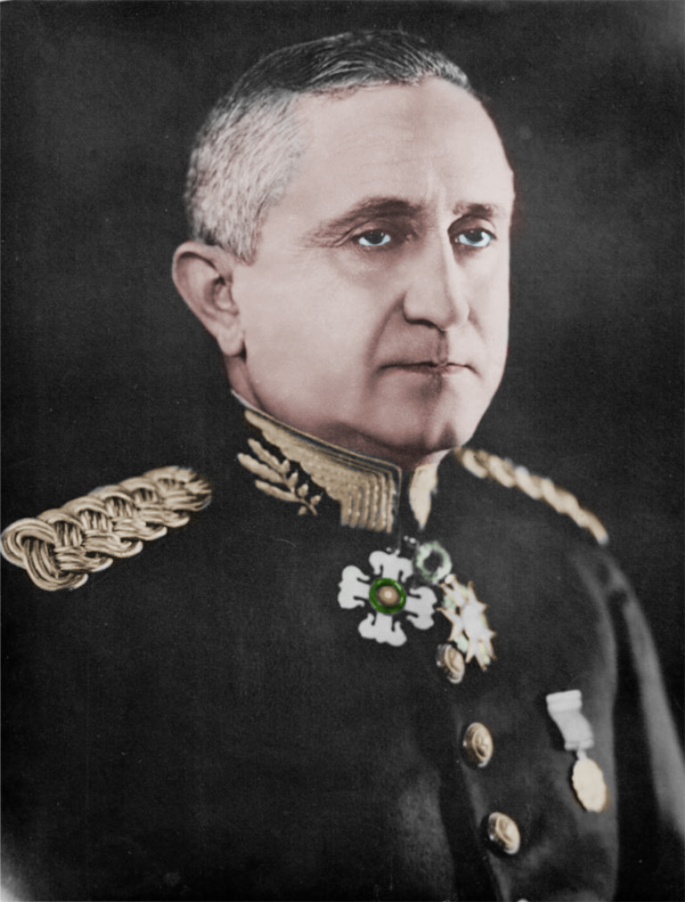
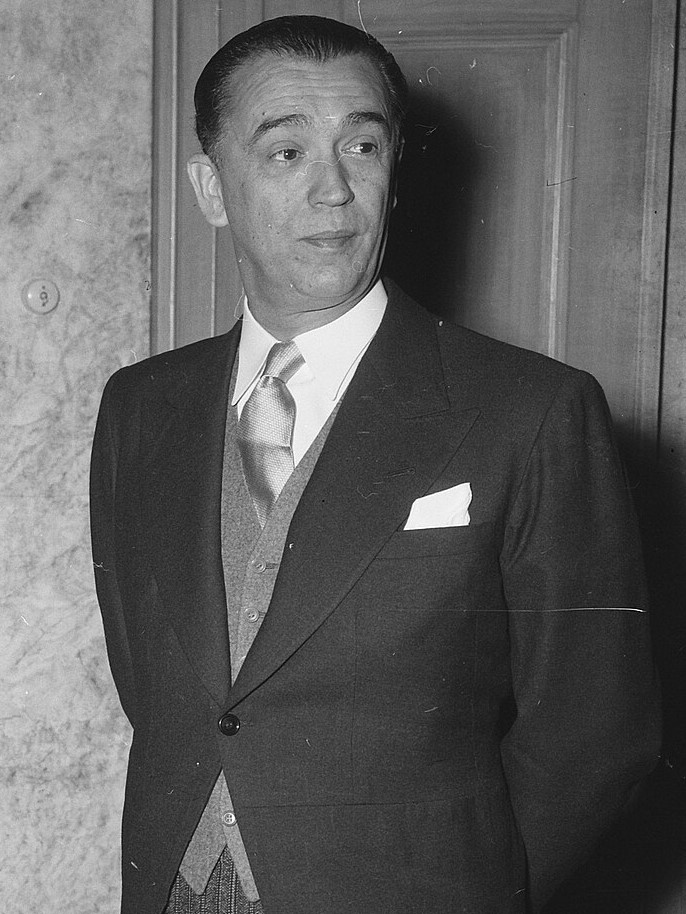
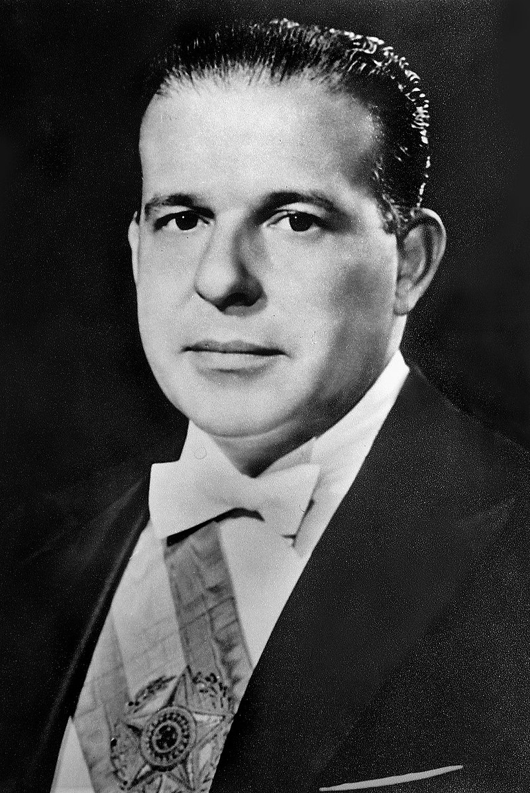

O Período Democrático no Brasil, também conhecido como a Segunda República, ocorreu entre 1945 e 1964. Esse período segue o fim da Era Vargas e antecede o golpe militar que instaurou a ditadura militar em 1964.
• Retorno à Democracia (1945-1946): Após a queda de Getúlio Vargas e o fim do Estado Novo, o Brasil voltou à democracia com a Constituição de 1946. Esse período foi marcado pela reabertura dos partidos políticos, a realização de eleições livres e a promulgação de uma nova constituição que estabelecia um sistema democrático de governo.
• Governo Dutra (1946-1951): Eurico Gaspar Dutra foi o presidente eleito no início do Período Democrático. Seu governo focou na reconstrução econômica pós-Segunda Guerra Mundial e na aproximação com os Estados Unidos. Dutra também enfrentou tensões políticas e econômicas, mas seu governo conseguiu estabilizar o país após o período de ditadura.
• Governo Vargas (1951-1954): Getúlio Vargas retornou à presidência em 1951, desta vez eleito democraticamente. Seu governo foi caracterizado por uma agenda nacionalista e desenvolvimentista, com ênfase na indústria e em reformas sociais. No entanto, enfrentou forte oposição política e, em meio a uma crise, Vargas acabou cometendo suicídio em 1954.
• Governos Juscelino Kubitschek e Jânio Quadros (1956-1961): Juscelino Kubitschek assumiu a presidência com a promessa de "cinquenta anos em cinco", focando em modernização e desenvolvimento do país. Seu governo foi marcado pela construção de Brasília e por avanços em infraestrutura. Após Kubitschek, Jânio Quadros foi eleito em 1960, mas seu mandato foi interrompido por uma crise política, levando à sua renúncia em 1961.
• Governo João Goulart (1961-1964): João Goulart, que assumiu a presidência após a renúncia de Jânio Quadros, enfrentou uma crescente polarização política e crises econômicas. Seu governo tentou implementar reformas de base, mas encontrou forte resistência de setores conservadores e militares.
O Período Democrático terminou com o golpe militar de 1964, que instaurou a ditadura militar e pôs fim à democracia no Brasil por 21 anos. Esse período democrático foi um momento de grande efervescência política e social, com avanços significativos e também com desafios que moldaram a história política do país.